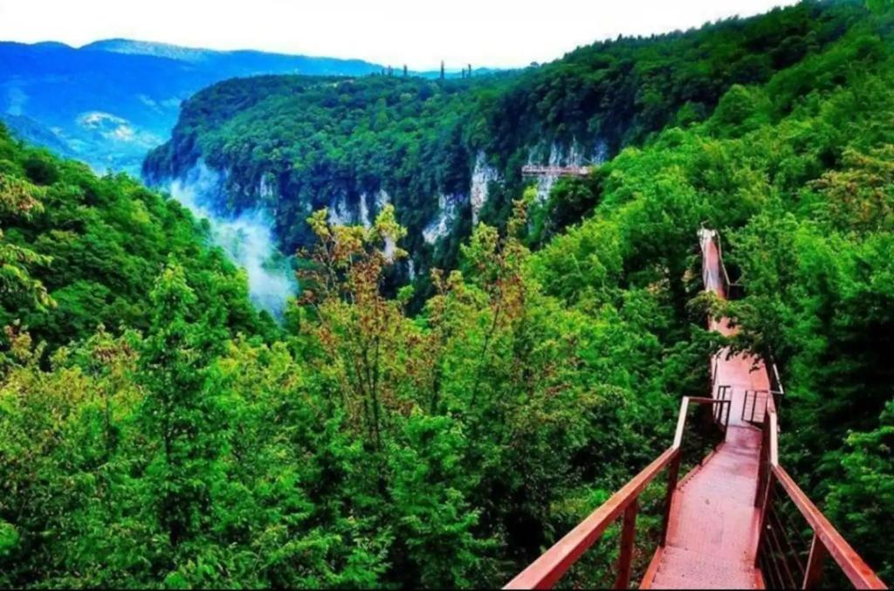

Hello im Gabriel khaniashvili
საქართველოს ტერიტორიაზე უძველესი დროიდან ადამიანთა ცხოვრების ფაქტს ადასტურებს დმანისში ჩატარებული არქეოლოგიური გათხრები. დმანისში აღმოჩენილი ადამიანის ჩონჩხის ფრაგმენტები უძველესია მთელს ევრაზიაში, რომლის ასაკი 1 800 000 წელია. ქართველების პირველი პოლიტიკური გაერთიანება დიაოხი და კოლხა მდინარე ჭოროხის აუზში ძვ. წ. II ათასაწლეულის ბოლოს შეიქმნა, მათ მხოლოდ რამდენიმე საუკუნე იარსებეს. ისინი დაამხეს ჩრდილოეთიდან შემოჭრილმა მომთაბარე ტომებმა.
(ლათ. natura, ბერძ. φύσις) — მატერიალური სამყარო, მსოფლიო, მთელი მატერია და ენერგია მის საწყის ფორმაში, მეცნიერული შესწავლის ძირითადი საგანი. ტერმინი ხშირად გამოიყენება ადამიანის არსებობის ბუნებრივი გარემოს მნიშვნელობით (ყველაფერი რაც ჩვენს ირგვლივ გვაკრავს, ადამიანის ხელით შექმნილის გარდა).